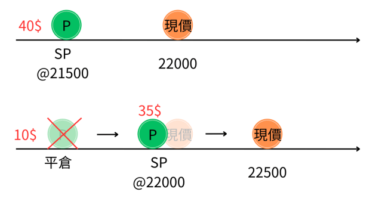
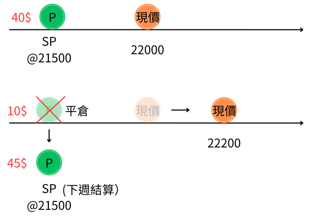
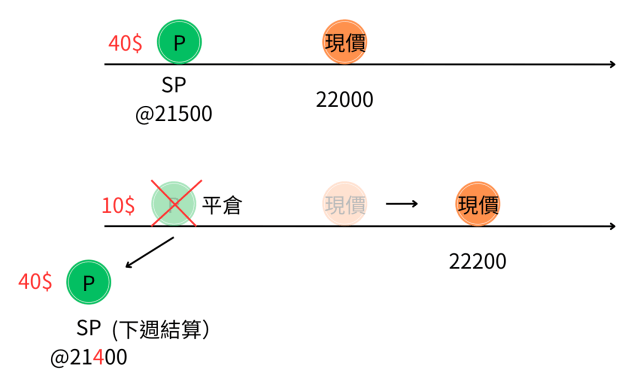

周選擇權的賣方轉倉（rolling）實戰3秘訣
作者： 勳仔 日期： 2025年1月11日 分類： 選擇權

前言
在「指數節稅多元收益投資法」框架下，周選擇權的賣方策略是重要的收益來源之一。本文將介紹如何透過週選擇權的轉倉（rolling）技巧來提升整體績效。
核心概念是：利用賣出週選擇權來收取權利金，同時等待指數回檔至目標價位。
適當利用週選擇權rolling（轉倉）的技巧，可以提升整體的績效。
三種轉倉技巧
1. 垂直轉倉（Vertical Rolling）

定義： 保持到期日不變，調整履約價格
適用情境：
- 權利金剩餘價值高時使用
- 可以增加額外收益
操作方式：
- 買回原有部位
- 同時賣出相同到期日、但不同履約價的新部位
2. 水平轉倉（Horizontal Rolling）

定義： 保持履約價不變，將到期日延後至下週
適用情境：
- 距離到期日較近
- 時間價值已經縮水
操作方式：
- 買回即將到期的部位
- 同時賣出相同履約價、但到期日延後的新部位
3. 對角轉倉（Diagonal Rolling）

定義： 同時調整履約價和到期日
適用情境：
- 用於「用時間換取獲利」
- 特別是在虧損情況下轉為盈利
操作方式：
- 買回原有部位
- 同時賣出不同履約價、不同到期日的新部位
重要原則
⚠️ 嚴格控制槓桿
「適當利用週選擇權rolling（轉倉）的技巧，可以提升整體的績效」
關鍵提醒：
- 不應為追求權利金而盲目增加部位
- 嚴格控制槓桿倍數
- 風險管理優先於收益最大化
總結
週選擇權的轉倉技巧提供了靈活的部位管理方式：
- 垂直轉倉 - 調整價格，增加收益
- 水平轉倉 - 延長時間，保持履約價
- 對角轉倉 - 同時調整，最大彈性
選擇適合的轉倉策略，配合市場狀況和個人風險承受度，才能在週選擇權操作中獲得穩定收益。
資料來源： 勳仔投資理財網